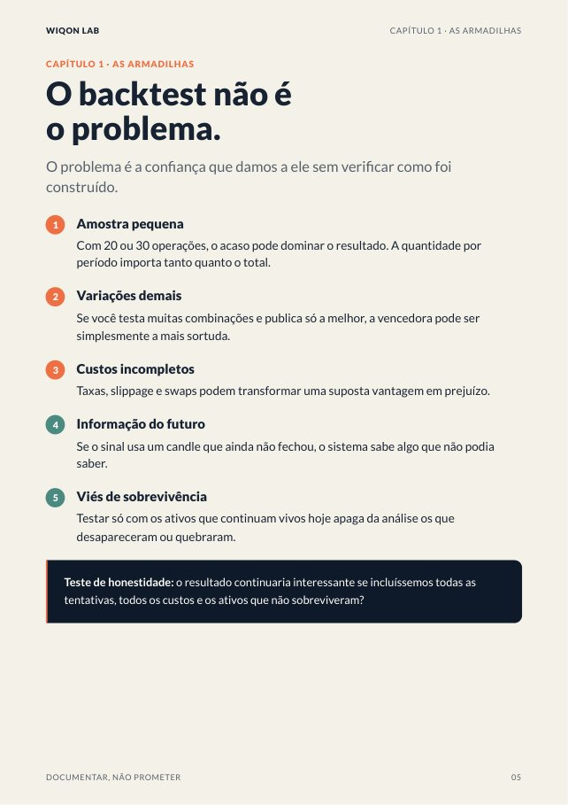
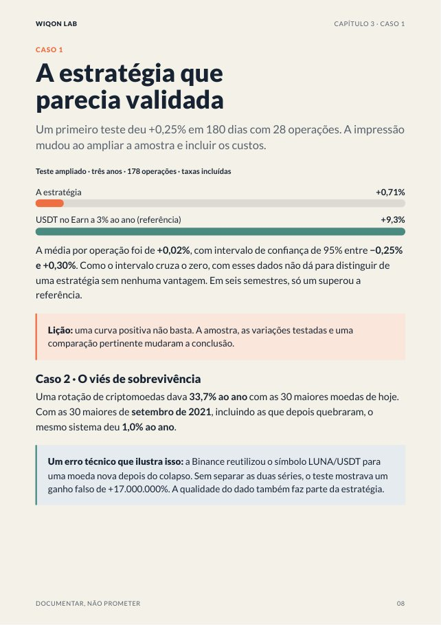
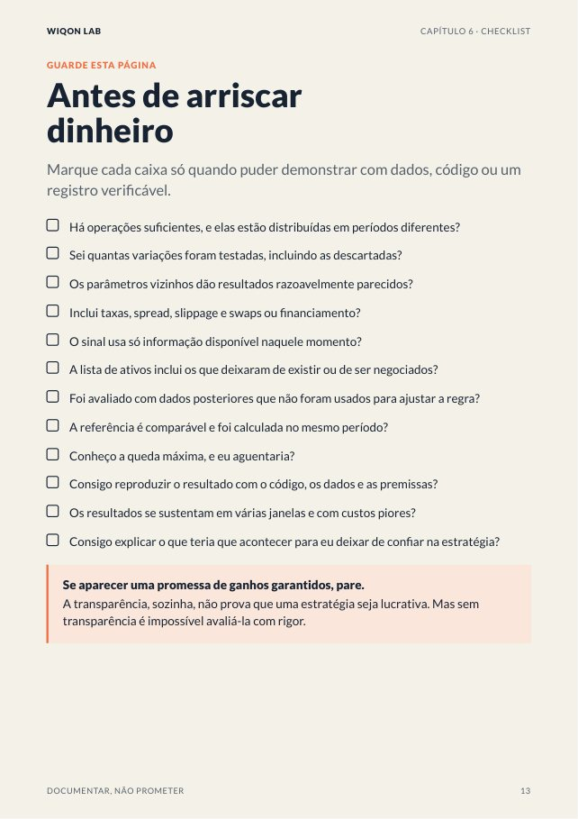

Testamos mais de 20 ideias de trading com dados reais e custos reais. Só uma sobreviveu. Este livro te dá as perguntas que separam uma vantagem real de um golpe de sorte, para você avaliar qualquer estratégia, robô ou sinal antes de colocar seu dinheiro.
O que você vai encontrar
- As 5 armadilhas que fazem um backtest sair bom demais
- As 7 perguntas que você deve fazer a qualquer estratégia ou robô
- 5 casos reais do laboratório, com os números: a estratégia que era sorte, o viés de sobrevivência, o custo dos swaps
- Um protocolo de 7 passos para auditar antes de arriscar
- Um checklist para imprimir e um semáforo para decidir
16 páginas · PDF · Edição outubro 2026 · Eng. Avelino González
Veja algumas páginas


